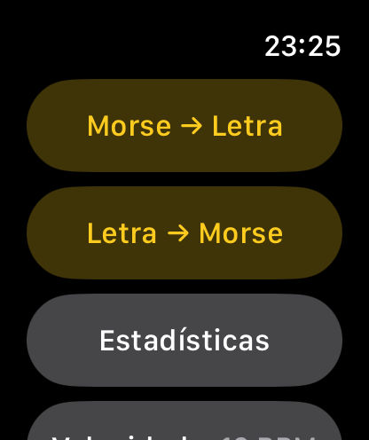
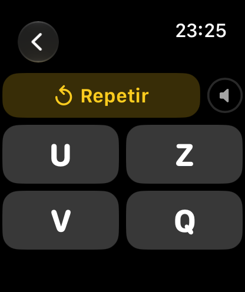
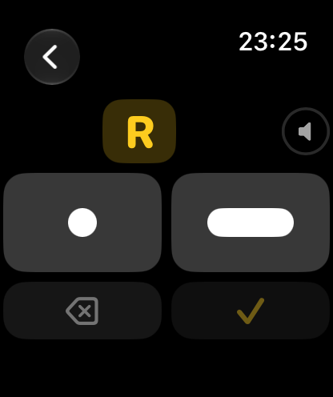
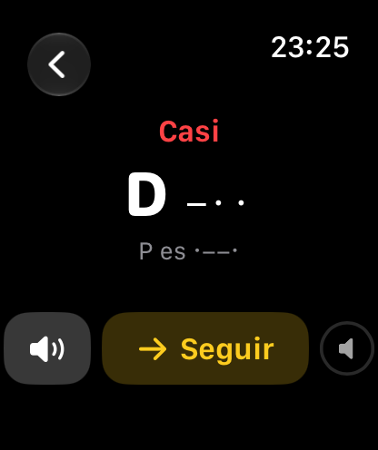
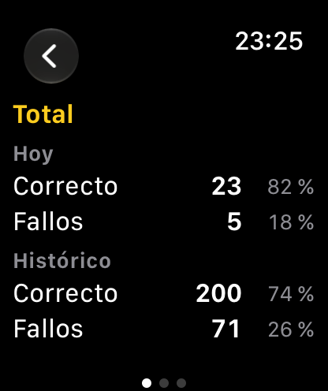
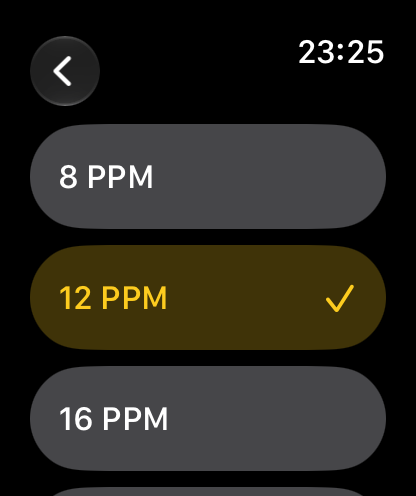

Morse Teacher: Código Morse
Aprende código morse en tu muñeca. Escucha una letra y elígela, o mira una letra y márcala con Punto y Raya. La respuesta correcta tras cada ronda, a la velocidad que elijas, de 8 a 25 palabras por minuto. Morse internacional de la A a la Z. No necesitas iPhone.
Requiere watchOS 8 o posterior.
Descargar

Soporte
¿Tienes una pregunta, encontraste un error o necesitas ayuda con la app? Escríbenos. Leemos todos los mensajes.
Antes de escribir
Prueba primero esto:
- ¿La app no responde? Pulsa dos veces la Digital Crown para ver las apps abiertas y desliza hacia arriba la tarjeta de Morse Teacher para cerrarla. Vuelve a abrirla desde la lista de apps.
- ¿No hay sonido? Gira la Digital Crown en una pantalla de práctica para subir el volumen. El sonido sale por el altavoz del reloj o por auriculares Bluetooth conectados.
- ¿Un pequeño icono de auriculares en el círculo de volumen? El sonido va a los AirPods u otros auriculares. El reloj guarda un volumen distinto para los auriculares y para su altavoz, y la Digital Crown ajusta el que está en uso.
- ¿Demasiado rápido? Abre Velocidad en el menú y elige una más baja. 8 PPM es un buen comienzo.
- ¿Letra → Morse marca fallo aunque el patrón parecía correcto? Revisa el número de símbolos y su orden. Deshacer borra el último antes de pulsar Comprobar.
Preguntas frecuentes
- ¿Funciona sin mi iPhone?
Sí, es totalmente independiente. No existe app para iPhone. - ¿Qué caracteres incluye?
Las 26 letras de la A a la Z del código morse internacional, según ITU-R M.1677-1. Los números y signos de puntuación no se incluyen en esta versión. - ¿Qué significa la velocidad?
La velocidad de los caracteres en palabras por minuto (PPM), según la palabra estándar PARIS. A 8 PPM un punto dura 150 ms; a 25 PPM, 48 ms. Al tocar una fila en la pantalla Velocidad suena un ejemplo a esa velocidad. - ¿Hay límite de tiempo?
No. Repite la letra cuantas veces quieras antes de responder. Cada ronda termina con el patrón correcto, lo que respondiste y un botón para volver a oírlo. - ¿Cada toque suena en Letra → Morse?
Sí. Punto y Raya tienen su propio tono, así oyes el patrón mientras lo construyes. - ¿Qué cuenta en las estadísticas?
Solo las rondas completadas. Las repeticiones y las rondas que dejas sin responder no cuentan. - ¿Recuerda mis ajustes?
Sí. Tu velocidad de práctica se restaura al volver a abrir la app. - ¿Recopila datos?
No se recopila ni se comparte ningún dato. La velocidad y los recuentos de práctica se quedan en el reloj.
Manual






Morse → Letra
- Abre Morse → Letra. Suena una letra enseguida.
- Toca Repetir tantas veces como necesites.
- Toca una de las cuatro letras para responder.
Letra → Morse
- Abre Letra → Morse. Aparece una letra.
- Toca las teclas Punto (●) y Raya (▬) para marcar su patrón. Cada toque suena con su propio tono.
- Deshacer (⌫) borra el último símbolo.
- Toca Comprobar (✓) para responder.
Resultado
Cada ronda termina con Correcto o Casi, la letra con su patrón correcto y lo que respondiste. Toca el botón del altavoz para volver a oírla y luego Seguir para una letra nueva.
Velocidad
Elige la velocidad de los caracteres entre 8 y 25 PPM. Toca una fila para oír un ejemplo a esa velocidad. Empieza despacio y sube hasta lo que se oye en la radio. La velocidad se aplica a los dos modos y se recuerda.
Estadísticas
Las estadísticas guardan aciertos y fallos de Hoy y del Histórico, cada uno con su porcentaje. Desliza de lado entre tres páginas: Total, Morse → Letra y Letra → Morse.
Alfabeto morse
| Letra | Código | Letra | Código |
|---|---|---|---|
| A | · ▬ | N | ▬ · |
| B | ▬ · · · | O | ▬ ▬ ▬ |
| C | ▬ · ▬ · | P | · ▬ ▬ · |
| D | ▬ · · | Q | ▬ ▬ · ▬ |
| E | · | R | · ▬ · |
| F | · · ▬ · | S | · · · |
| G | ▬ ▬ · | T | ▬ |
| H | · · · · | U | · · ▬ |
| I | · · | V | · · · ▬ |
| J | · ▬ ▬ ▬ | W | · ▬ ▬ |
| K | ▬ · ▬ | X | ▬ · · ▬ |
| L | · ▬ · · | Y | ▬ · ▬ ▬ |
| M | ▬ ▬ | Z | ▬ ▬ · · |
Aviso legal
Política de privacidad
Última actualización: noviembre de 2026
Introducción
Bienvenido a Morse Teacher. Nos comprometemos a respetar y proteger tu privacidad. Esta Política de privacidad describe qué información recopilamos, o en este caso no recopilamos, y cómo protegemos tu privacidad.
Información que no recopilamos
Morse Teacher se ha diseñado sin recopilación de datos. No recopilamos, almacenamos, usamos, compartimos ni transferimos ningún dato personal de nuestros usuarios. La app funciona por completo en tu Apple Watch y no procesa ni guarda datos en ningún servidor.
La app guarda dos cosas en tu reloj: la velocidad de práctica elegida y tus recuentos de práctica (aciertos y fallos de hoy y del histórico). Se guardan solo en el reloj, nunca se envían a ningún sitio y se borran al eliminar la app.
La app no accede a la red y no tiene cuentas de usuario, analíticas, publicidad ni código de terceros.
Servicios de terceros
Morse Teacher no se integra con ningún servicio de terceros, como herramientas de analítica, redes publicitarias o redes sociales. No se comparte ningún dato con terceros.
Privacidad de los menores
Como no recopilamos ningún dato, cumplimos con las normas aplicables sobre la privacidad de los menores, como la ley estadounidense COPPA (Children's Online Privacy Protection Act).
Cambios en esta Política de privacidad
Podemos actualizar esta Política de privacidad de vez en cuando. Te recomendamos revisar esta página periódicamente. Los cambios entran en vigor en cuanto se publican aquí.
Contacto
Si tienes preguntas o sugerencias sobre esta Política de privacidad, escríbenos a: support [at] hoshinosoftware [dot] com